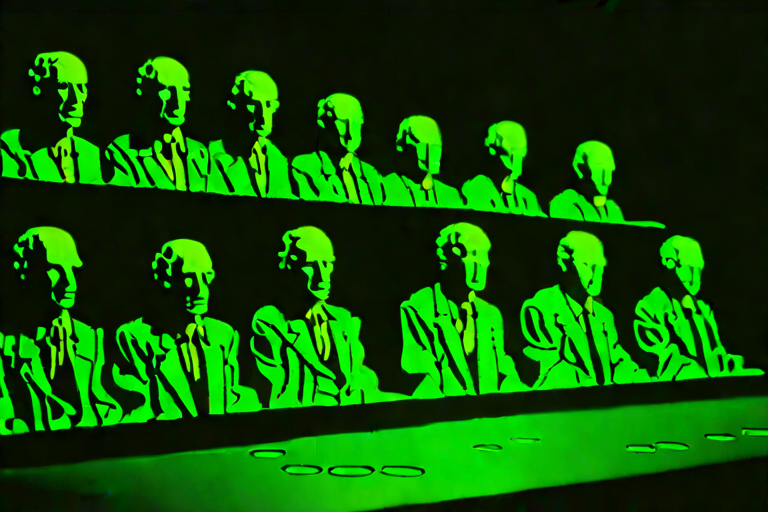

The Wax Museum
The newest wing, and the most crowded — though nothing in it moves. A hundred and twelve wax tableaux the machine poured overnight: congregations that melt, crowds held mid-gesture, a fabrication floor that makes the visitors, and a strip of neon that cannot spell. Nine halls of held breath. Mind the ropes.
Begin the guided tour →
The jury is still out.
- 01 The Melted Congregation Group portraits, left too near the heat.
- 02 The Backlit Congregation Crowds against a light they face but never reach.
- 03 Motion in the Cage Movement, arrested and bolted to the floor.
- 04 The Radiograph Hall The same tableaux, seen through the skin.
- 05 The Fabrication Wing Where the visitors are made.
- 06 After Hours The strip after midnight, spelled wrong.
- 07 The Neon Congregation Wax crowds, gathered under the glow.
- 08 Institutional Dread Civic waiting rooms with no one to call your name.
- 09 The Grand Halls The set pieces, and the cameras that watch them.
Enter any room — or walk them in order from the top.